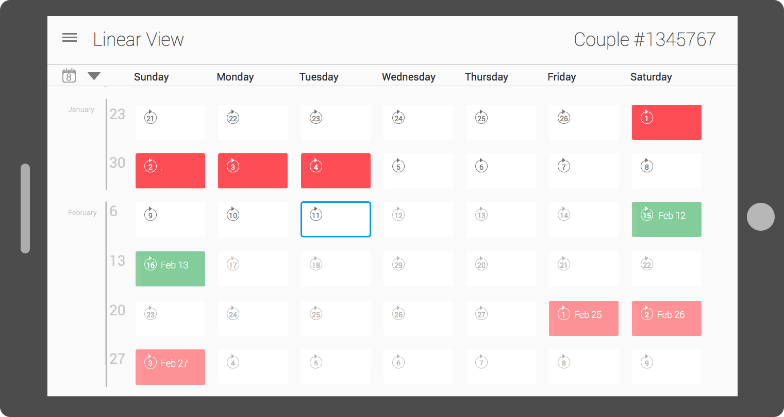
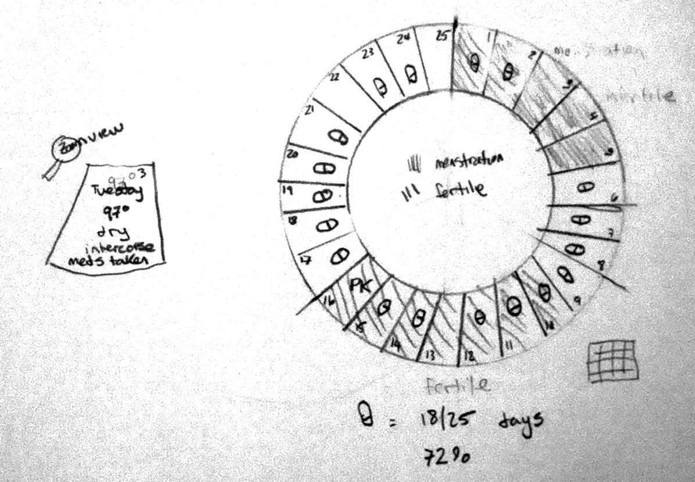
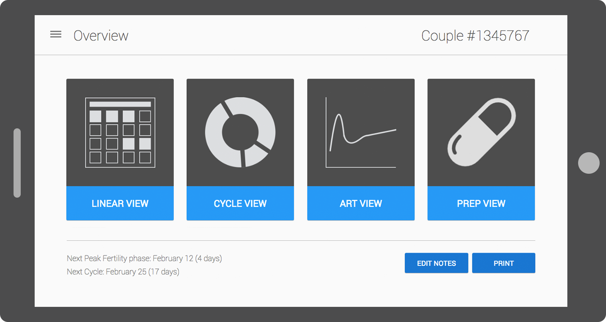
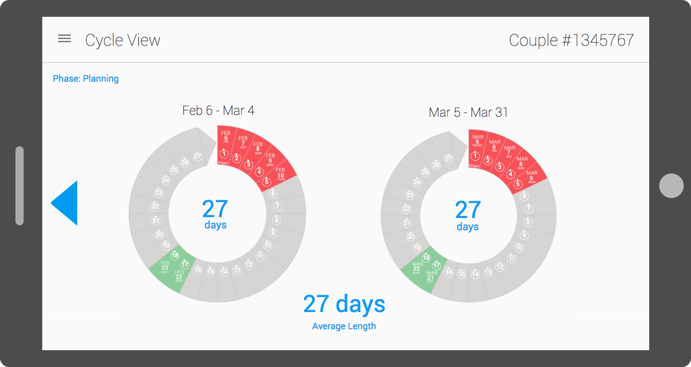
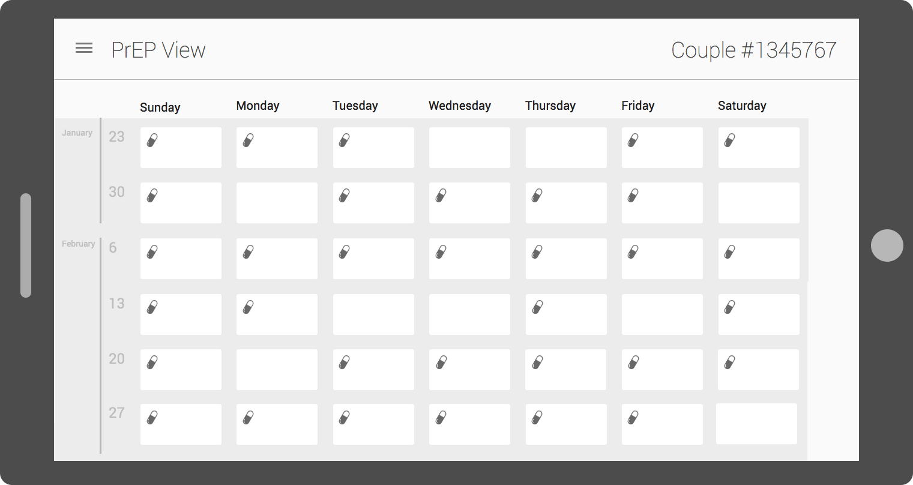

Conception Tracking
Project Summary
Informed by user research, I designed a tablet prototype for clinicians to use to help serodiscordant couples (one partner living with HIV) safely conceive children. The prototype displayed the couples data visually while also providing information on the woman's fertility cycle and the viral load of the partner living with HIV. The goal of the project was to build a fully interactive prototype that could be used on site in Kenya and Uganda during usability studies with clinicians.
Problem Space
Many serodiscordant couples in Kenya and Uganda want to have children, but unfortunately the clinicians struggle with informing the couples when it is safest to conceive.
How might we develop an app to better support the clinicians when providing tools and education about the safest times to conceive?
Process
I started by researching and learning about the fertility cycle and treatment of HIV by reading relevant literature, interviewing clinicians, and viewing presentations about how the clinics operate. Next, I completed a comparative analysis of apps currently on the market that track both fertility and medication.
After researching I began sketching and paper prototyping solutions.
Exploring options with a circular fertility chart, which is something adopted by many competititos. A pill icon notes if the HIV medication (PrEP, and ART) was taken, and different patterns indicate the woman's mentstral cycle, and the best days to conceive. Tapping on a section would display a detailed view of that particular day.
I also explored a linear view with a snapshot of the most important information related to the HIV medication. Summarizing the amount of pills taken across a variety of time spans and visuallu representing any missed days.
After many paper-prototype iterations I built and iterated on an Axure prototype that included both linear and circular views.
  Throughout the prototyping process we ran small feedback sessions and usability students to ensure it was ready for use in the usability studies in Africa. For example, I learned that the clinicians tracked the couple as a unit and not individuals, so I built each page to represent a snapshot of the couple's information.
Results
The app was successfully brought to Africa and resulted in valuable usability feedback, the app was then brought to development.
I co-authored a peer-reviewed paper for the 2015 Wireless Health conference, titled "Prototype Development for a Clinic-Based Mobile Health Tablet Application for Kenyan HIV-1 Serodiscordant Couples Using Safer Conception Strategies".
Date
Early 2015
Links
Tasks
- User Research
- Competitive Analysis
- Prototyping
Tools
- Axure
- Beanstalk